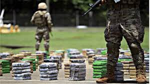

Narcotráfico en MéxicoEl narcotráfico en México es una actividad ilegal que consiste en el cultivo, fabricación, distribución y venta de sustancias ilícitas. Desde la década de los años 60, se han conformado, expandido y desaparecido en México diversos cárteles que controlan el mercado de las sustancias ilegales, los cuales han mantenido una abierta disputa por controlar el territorio nacional, así como por llevar a cabo su exportación a todo el mundo. Historia del narcotráfico en MéxicoLos antiguos pobladores mexicanos consumían varios tipos de plantas para diversos ritos antiguos. Los chamanes eran sus principales usuarios, hasta la caída de Tlaxcala y el abandono del Popocatépetl, centros principales donde se consumían algunos tipos de hongos alucinógenos. Sin embargo, su consumo era únicamente para fines ritualísticos, no comerciales. Usualmente, se dice que el narcotráfico en México comenzó a manifestarse a principios del siglo XX, en el estado de Sinaloa. No obstante, al día de hoy, con las investigaciones llevadas a cabo se conoce dato de distintas personalidades del ilícito que abundaban los estados de Chihuahua, Coahuila, Durango y Sonora. Algunos de estos, son "la Chata", Pablo González "el Pablote", Ignacia "la Nacha" Jasso, entre otros. Esta última destaca entre todos por ser la primera líder criminal en controlar el tránsito internacional de cocaína, marihuana y heroína, además del alcohol, durante su prohibición en los Estados Unidos. Todo esto desde la comodidad de su residencia en Ciudad Juárez. Es por esto que se le ha dado a llamar "la abuela del narcotráfico". Su gran desarrollo posterior, según los analistas de seguridad, se atribuye a un arreglo implícito que existía, desde inicios de los años 80, entre los traficantes de las sustancias y los gobiernos locales y estatales, así como a la posterior terminación de este arreglo con la guerra que el Estado mexicano le declaró, desde mediados de la década de 2000, a los cárteles (las organizaciones ilícitas). Este arreglo "gobierno-narcotráfico" consistía en permitir el libre paso de cargamentos de droga desde Sudamérica hasta los Estados Unidos por rutas fronterizas definidas en una parte del territorio mexicano, transportando estos cargamentos, principalmente por tierra, hacia los Estados Unidos a cambio de grandes cantidades de dinero como soborno para las autoridades y gobernantes mexicanos. También se tenían repartidos entre los cárteles, a nivel local, territorios o plazas ya definidos, los cuales se respetaron entre sí en un comienzo. Además, se toleraba la producción de cultivos ilegales en México de marihuana y de amapola, cultivadas principalmente en los estados de Sinaloa, Durango, Chihuahua, Guerrero, Chiapas y Veracruz, a cambio de sobornos, que variaban según el cargo de la autoridad a sobornar. La violencia se presentaba sobre todo en la frontera México-Estados Unidos, donde se buscaba burlar a las autoridades estadounidenses para introducir las sustancias en ese territorio.  |